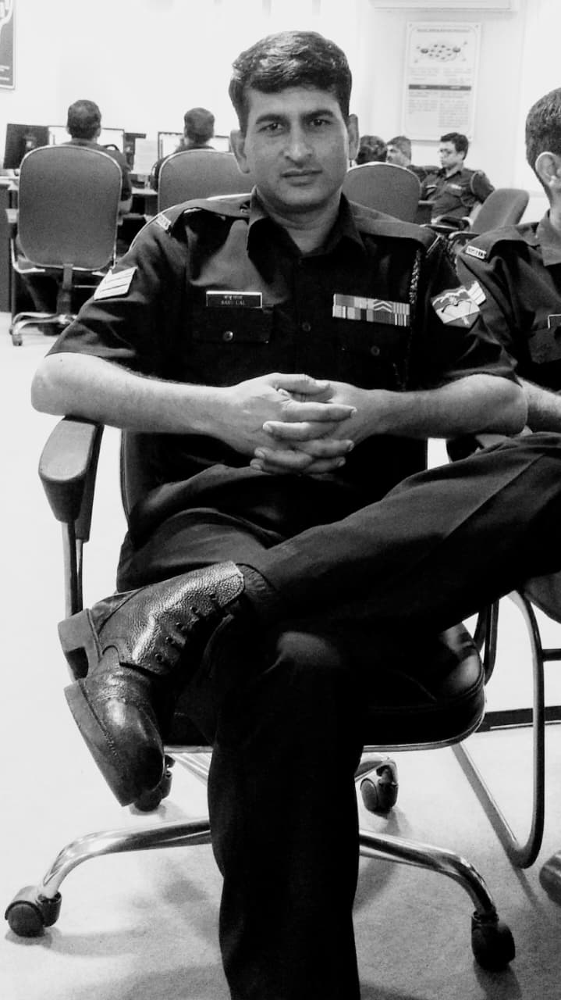

Telecommunications & IT career
24+ years across telecommunication and information-technology operations, installation, configuration and technical support.

24+YEARS IN TELECOM & ITCEO & LEAD NETWORK ENGINEER
Bringing decades of field experience in telecommunications, networking and systems support to every Shree Hari Networks project.
LEADERSHIP
From high-frequency radio systems to Cisco routing and switching, Babu Lal’s career combines hands-on installation, configuration and troubleshooting with the discipline required for business-critical networks.
24+ years across telecommunication and information-technology operations, installation, configuration and technical support.
Telecommunication and IT work with United Nations personnel, including networking equipment, microwave towers, radio systems and information-technology support.
Completed Cisco Certified Network Associate Routing and Switching. Certificate issued in 2016; the document records a certification period through 2019.
Applying proven network, fibre, surveillance and systems expertise to practical infrastructure projects for businesses and facilities.
TECHNICAL CAPABILITY
Technical coverage from backbone connectivity and physical infrastructure through to configuration, security and operational support.
Layer 2/3 Cisco switch and router installation, configuration, LAN/MAN/WAN connectivity and network fault diagnosis.
OFC jointing, fibre splicing, OTDR troubleshooting, MDF/IDF layout work and structured wiring engineering.
Video conferencing and surveillance systems, connectivity diagrams, system installation and support.
Radio, microwave, satellite, modems, voice/data platforms, multiplexer systems and exchange equipment.
Computer hardware/software troubleshooting, Microsoft Server environments and technical system security.
On-site surveys, equipment installation, configuration, testing, documentation and reliable handover.
VERIFIED QUALIFICATION
Completed in 2016. The supplied certificate records its validity through 2019.
EDUCATION & SKILLS
DISCUSS YOUR REQUIREMENT